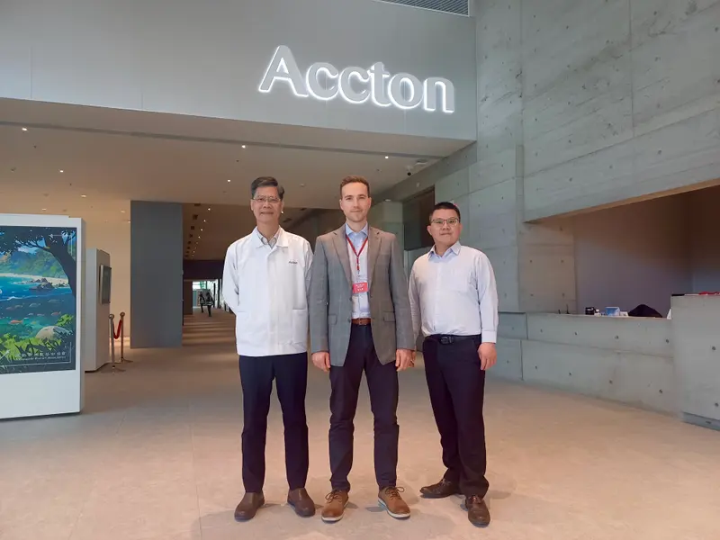
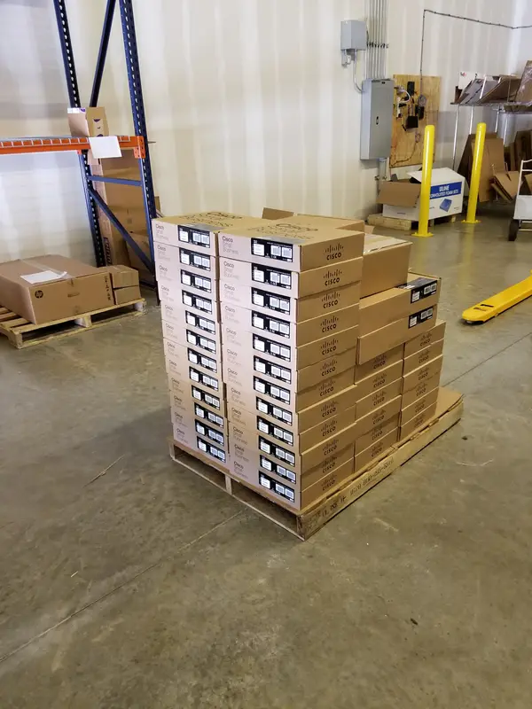
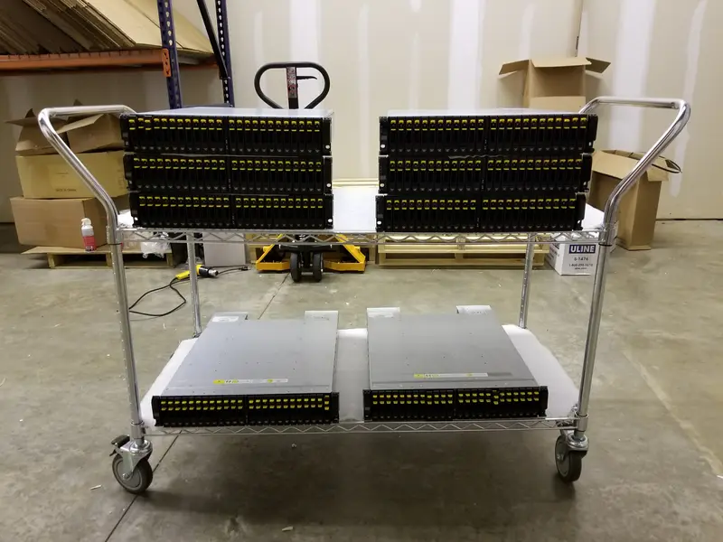
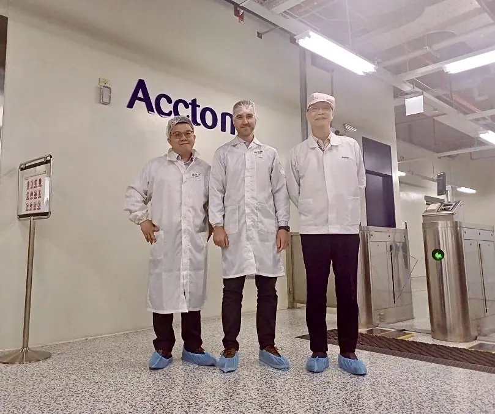

What 20 years of Hardware Nation taught me

I started Hardware Nation in 2006, at 24, after graduating from Georgia Tech. We sourced IT equipment from many vendors for data centers, and I built the company from the ground up without outside funding: sales, engineering, business relationships and the systems behind it. Over 20 years I've built relationships with hundreds of manufacturers, ODMs, distributors and software companies, hired hundreds of engineers, from software to electrical, and led projects big and small.
Twenty years later, we help organizations buy, build and run IT infrastructure: networking, servers and storage, security, power and the software around them. We've served more than 1,000 customers, from startups to global enterprises, universities and government agencies, including Lockheed Martin, Raytheon Technologies, Accenture, Rockwell Automation, Stanford University, Georgia Tech, Northrop Grumman and Zoox.
Digital first
I learned what digital could do before Hardware Nation, when I took my father's businesses online and watched the phones start ringing. So from early on I believed the way to grow this business was digital. In 2012 we launched hardwarenation.com, which I built myself: hundreds of thousands of products online, backed by warehouses across the country. Since then we've relaunched, rebuilt and refocused it many times as the market moved.
I use the website and our online channels to read the market: put products in front of buyers, see what they search for and ask about, and invest more where buyers want something we can reliably supply. It let us test new markets and product categories quickly, and it brought in enterprise projects from data centers and internet providers.


“We think of ourselves as a service company that just so happens to sell IT equipment.”
Open networking and ODMs
In 2016 we moved into open networking, and it became the center of our engineering: switches built by ODMs, running open network operating systems such as SONiC and Cumulus Linux, alongside Arista, HPE, Juniper and NVIDIA. We've deployed SONiC in enterprise production networks.
Open networking means working directly with the ODMs that design and build the hardware, mostly in Taiwan. When a switch doesn't behave the way its documentation says, we reproduce the problem, work through it with their engineering teams and help develop the features our customers need.

Supply chain
Finding a part used to be the hard part. Now it is availability: knowing what can actually ship, when, and what the alternatives are when it can't. We work with distributors across the country and directly with manufacturers, and much of our work is helping customers through those gaps, from a single replacement part to a multi-vendor deployment.
Where the value moved
For years, information was the advantage: knowing where to find a product, what could substitute for it and how to solve a requirement. Search and AI have made much of that free. What stays hard is the complex, multi-vendor purchase: too complex for a simple online checkout, and too small or scattered for the manufacturers to handle directly. That is where we focus.
I keep asking where value is moving and what slows customers down, then put the team's effort there. Today that means AI. I build workflows and multi-agent systems that turn what customers search for, ask about and buy into decisions about what to offer, where to source it and where customers need us most.
What I learned
- Follow where the value moves. What made you valuable five years ago may be free today. Keep asking what customers still can't get easily.
- Let the market tell you where to go. Put products in front of customers, measure what they actually want, and invest more there.
- Service is the product. The equipment is what customers buy. Clear answers, complete orders and follow-through are why they come back.
- Pivots are part of the job. In 20 years we have changed direction many times and made our share of mistakes. Each one taught us something we still use.
More at hardwarenation.com. My other story: what two years of building an AI network engineer taught me.